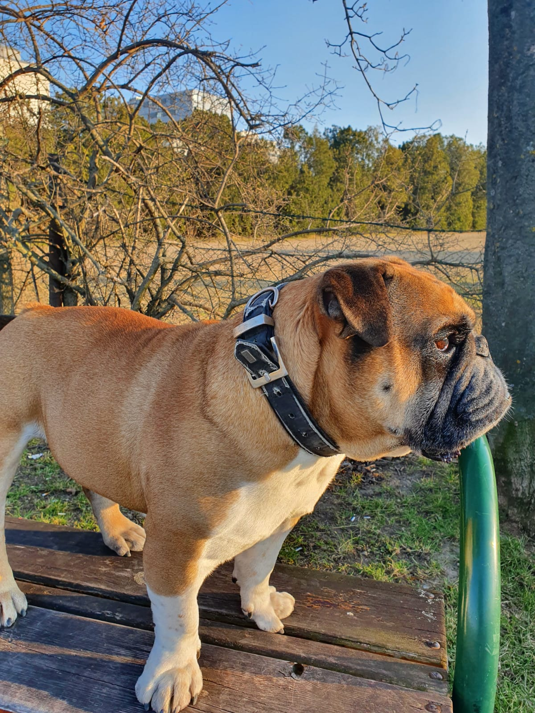
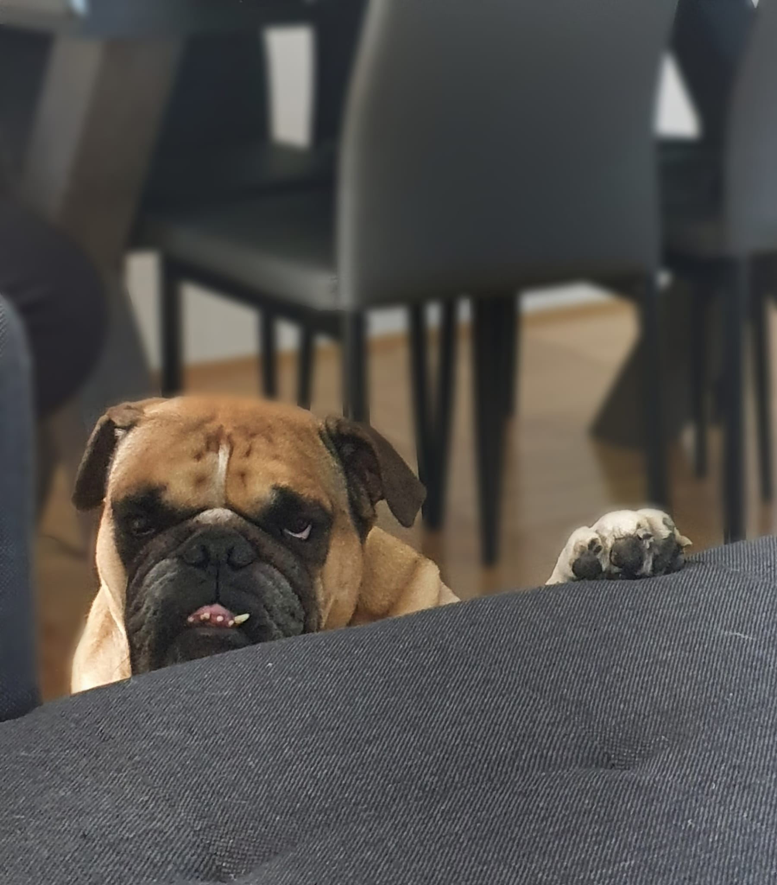
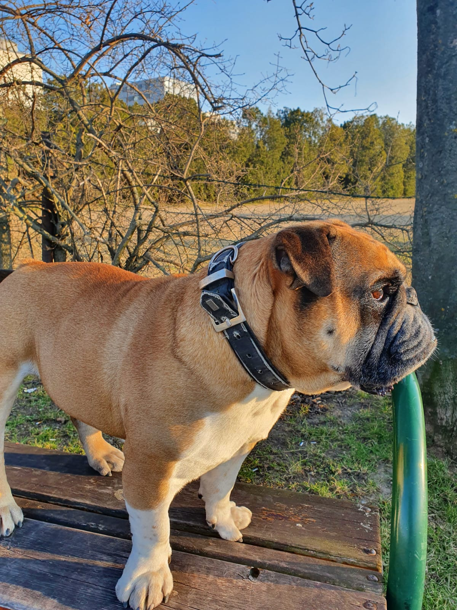
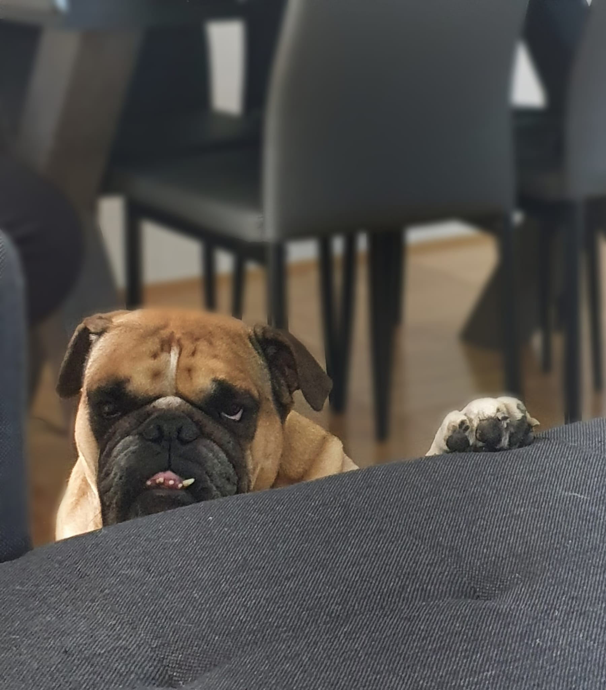
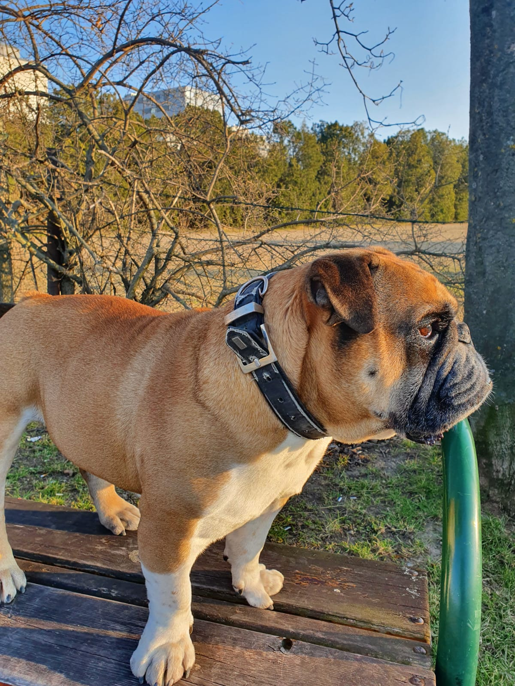
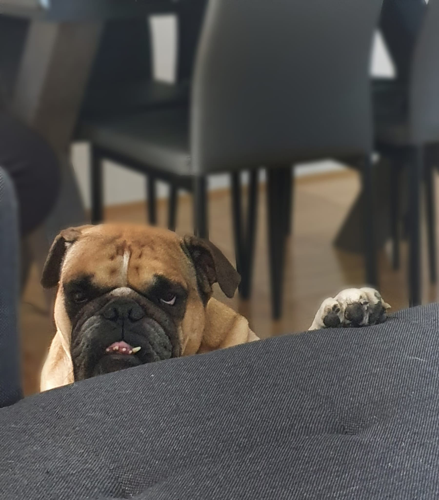
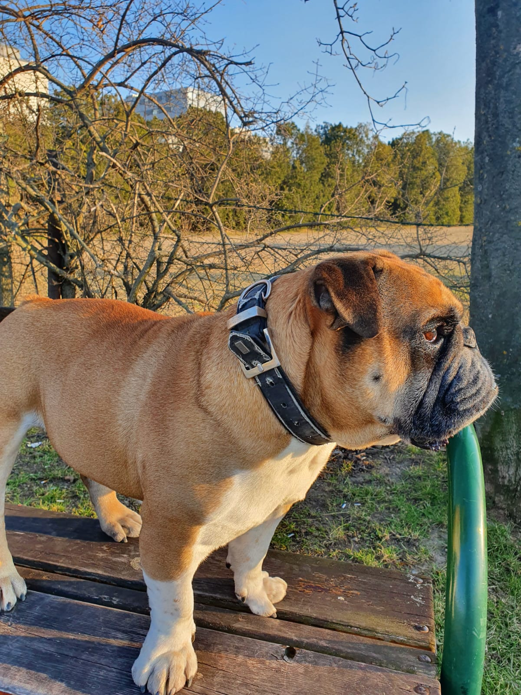
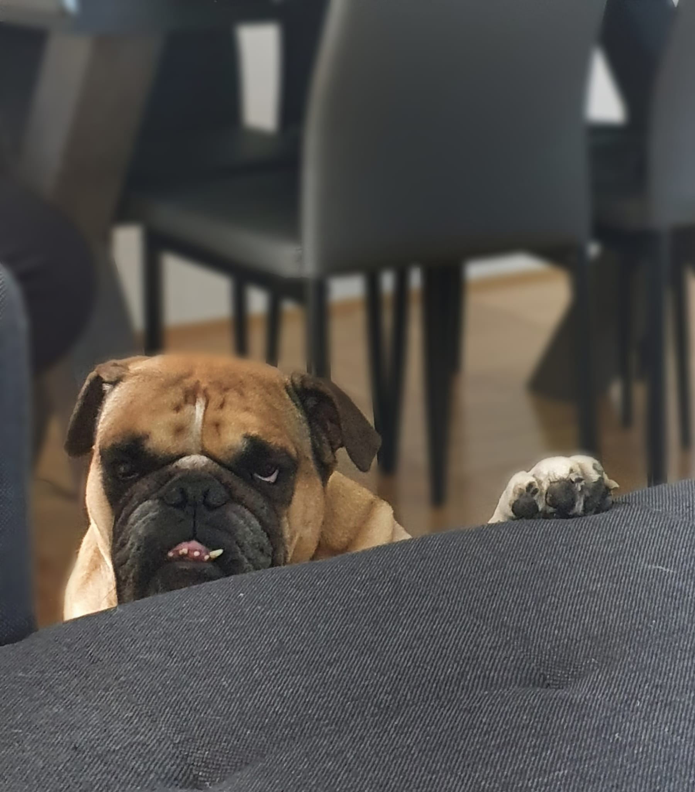

Bulldogs love their owners and especially children. They are loyal companions in every situation. Although sometimes a little bit rough and constantly stubborn, they rarely pose a danger to anyone.
An English Bulldog is not a very athletic type of dog. They spent most of their time lying and sleeping.In addition to that, if it is too hot or too cold and wet outside, you will have a hard time in order to get them out of the apartment.
This type of dog is very attached to their owner. Although they can't swim, they would jump into the water if their owner does that.